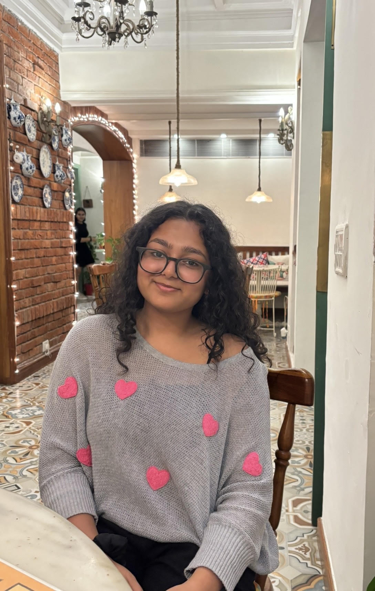

Somya Aggarwal

Summary
I am a Creative and detail-oriented BA(JMC) student at VIPS-TC with a passion for storytelling, media production, and digital content creation. I am always eager to learn and grow, I am looking for opportunities to apply my skills.
Education
- Bal Bharati Public School (2009-2024)
- Vivekananda Institute Of Professional Studies- BA Journalism and Mass Communication (2024-2027)
Skills
- Good Communicator
- Video Editing
- Content Creation
- Social Media Management
- Creative direction for shoots
- Camera Handling & Visual aesthetics
Other
Contact Me